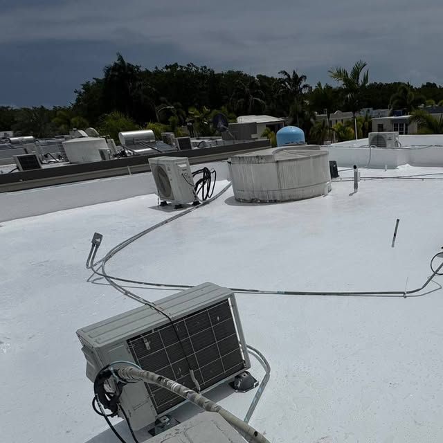
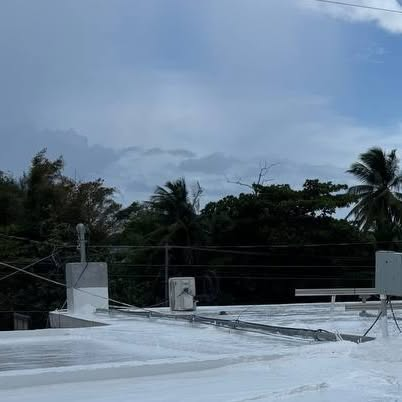
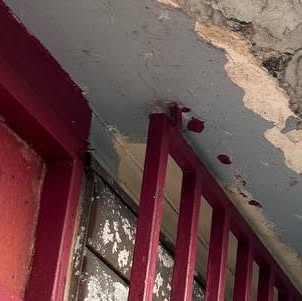
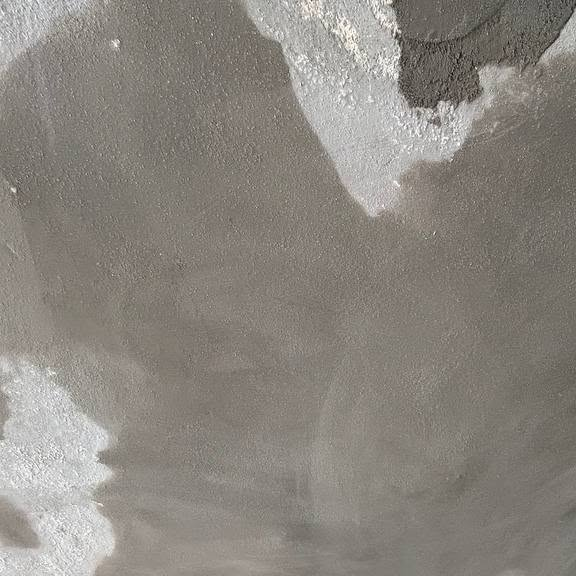

01

Sellado de techos
Sistema de sellado completo para que la lluvia no entre más a tu casa.

Sellado de techos e impermeabilización que aguanta el aguacero. La gota cae, se rompe... y tu techo ni se inmuta.
Lo que hacemos
Primero evaluamos tu techo, después sellamos. Nada de tirar sellador a lo loco.

Sistema de sellado completo para que la lluvia no entre más a tu casa.

Reparamos la varilla expuesta y corroída antes de sellar, para que el arreglo dure.

Detectamos por dónde entra el agua y corregimos el problema de raíz.
Barrera impermeable sobre toda la superficie del techo.
Mantenimiento preventivo para que el sellado siga trabajando año tras año.
Fotos reales
Trabajos documentados de Sin Gotera.
Dudas
Cotiza hoy
Llama y coordina la evaluación de tu techo.